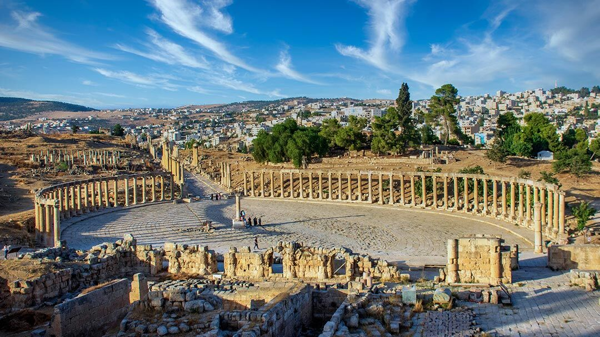

Jerash, often referred to as the "Pompeii of the East," is one of the best-preserved Roman cities outside Italy. Known for its impressive Oval Plaza, majestic columns, and ancient theaters, Jerash is a testament to the grandeur of Roman architecture.
Walk through the ancient streets, where the echoes of history still resonate, and explore the temples, arches, and baths that have stood the test of time. Surrounded by olive groves and rich greenery, Jerash offers a unique blend of natural beauty and historical wonder.
